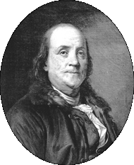

|  |
| |
illustration © 1996 Chris Peltier
In 1619, America’s first marijuana law was enacted at Jamestown Colony, Virginia, “ordering” all farmers to “make tryal of” (grow) Indian hempseed. More mandatory (must-grow) hemp cultivation laws were enacted in Massachusetts in 1631, in Connecticut in 1632, and in the Chesapeake Colonies into the mid-1700s.
Even in England, the much-sought-after prize of full British citizenship was bestowed by a decree of the crown on foreigners who would grow cannabis, and fines were often levied against those who refused.

Benjamin Franklin started one of America’s first paper mills with cannabis. This allowed America to have a free colonial press without having to beg or justify paper and books from England.
Cannabis hemp was legal tender (money) in most of the Americas from 1631 until the early 1800s. Why? To encourage American farmers to grow more.1
1. Clark, V.S., History of Manufacture in the United States, McGraw Hill, NY, 1929, Pg. 34.
You could pay your taxes with cannabis hemp throughout America for more than 200 years.2
2. Ibid.
You could even be jailed in America for not growing cannabis during several periods of shortage, e.g., in Virginia between 1763 and 1767.
(Herndon, G.M., Hemp in Colonial Virginia, 1963; The Chesapeake Colonies, 1954; L.A. Times, August 12, 1981; et al.)
The Chinese character “Ma” was the earliest name for hemp. By the 10th Century, C.E., Ma had become the generic term for fibers of all kinds, including jute and ramie. By then, the word for hemp became “Tai-ma” or “Dai-ma” meaning “great hemp”.
George Washington and Thomas Jefferson grew cannabis on their plantations. Jefferson,3 while envoy to France, went to great expense—and even considerable risk to himself and his secret agents—to procure particularly good hempseeds smuggled illegally into Turkey from China. The Chinese Mandarins (political rulers) so valued their hemp seeds that they made their exportation a capital offense.
3. Diaries of George Washington; Writings of George Washington, Letter to Dr. James Anderson, May 26, 1794, vol 33, p. 433, (U.S. govt. pub., 191); Letters to his caretaker, William Pearce, 1795 & 1796; Thomas Jefferson, Jefferson’s Farm Books; Abel, Ernest, Marijuana: The First 12,000 Years, Plenum Press, NY, 1980; M. Aldrich, et al.
The United States Census of 1850 counted 8,327 hemp “plantations”* (minimum 2,000 acre farms) growing cannabis hemp for cloth, canvas, and even the cordage used for baling cotton. Most of these plantations were located in the South or in the border states, primarily because of the cheap slave labor available prior to 1865 for the labor-intensive hemp industry.
(U.S. Census, 1850; Allen, James Lane, The Reign of Law, A Tale of the Kentucky Hemp Fields, MacMillan Co., NY, 1900; Roffman, Roger, Ph.D., Marijuana as Medicine, Mendrone Books, WA, 1982.)
* This figure does not include the tens of thousands of smaller farms growing cannabis, nor the hundreds of thousands—if not millions—of family hemp patches in America; nor does it take into account that 80% of America’s hemp consumption for 200 years still had to be imported from Russia, Hungary, Czechoslovakia, and Poland well into this century.
Benjamin Franklin started one of America’s first paper mills with cannabis. This allowed America to have a free colonial press without having to beg or justify paper and books from England.
In addition, various marijuana and hashish extracts were the first, second, or third most prescribed medicines in the United States from 1842 until the 1890s. Its medicinal use continued legally through the 1930s for humans and figured even more prominently in veterinary medicines during this time.
Cannabis extract medicines were produced by Eli Lilly, Parke-Davis, Tildens, Brothers Smith (Smith Brothers), Squibb, and many other American and European companies and apothecaries. During all this time there was not one reported death from cannabis extract medicines, and virtually no abuse or mental disorders reported, except for first-time or novice-users occasionally becoming disoriented or overly introverted.
(Mikuriya, Tod, M.D., Marijuana Medical Papers, Medi-Comp Press, CA, 1973; Cohen, Sidney & Stillman, Richard, Therapeutic Potential of Marijuana, Plenum Press, NY, 1976.)
alternative versions of some pictures
the authorized on-line version of Jack Herer’s “The Emperor Wears No Clothes”
| previous page | intro | next page |
|
 |
 |
 |
 |